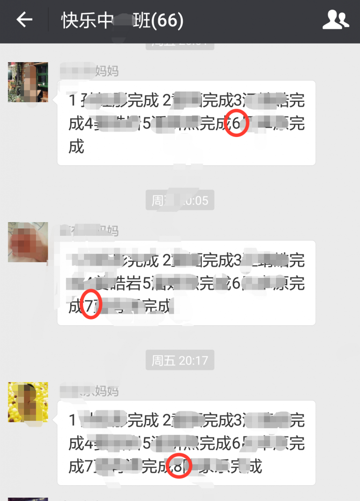

论CAS在幼儿园点名中的应用
宝贝的幼儿园老师都是漂亮活泼又富有爱心的小天使一样的人物，非常神奇的教会了宝贝们很多我们家长们都搞不定的事情，非常有办法的完全不用发火的将这些淘气的小家伙们修理的服服贴贴，在小宝贝们眼里简直就是神一般的存在，当然在家长眼里也是。
如果你以为这就是全部，那就大错特错了。就在这两天发现了，她们居然也是深谙各种计算机中的算法。不得不偷着怀疑这些白天在学校里的陪孩子们玩的小姑娘们下班后是不是在菊厂或者其他公司写代码。

这不这两天在家长群里发了消息，就小露了一手。这个案例的背景是要收集到每个宝贝的家长对一个重要通知的确认。上级的重要通知，每个家的家长都要确认。如果你说请在群里回复“收到”那简直弱爆了。最终怎么确认每个都收到了。
看看我们美女老师设计的算法。如右图所示，每个家长的回复一个序号+宝贝名+收到，序号是根据前面的回复次序i++上来，并且每个回复要求追加在前面一个回复的后面。
这样：
同一个时间段内家长回复非常密集（我们都非常积极的支持我们老师们的工作的），那发之前就要检查下是否符合这个规则。比如douba发之前，先拷贝前面的串，发现doudou轮到10号了，那我们该回复的串就是：1苹果收到 2 桃子收到……10豆豆收到。如果在发出去前发现有个家长先于我们发到群里了：1 苹果收到 2 桃子收到……10香蕉收到，那么douba这个提交就和香蕉冲突了，需要发：1 苹果收到 2 桃子收到……10香蕉收到收到 11 豆豆收到。
并发场景下，在更新同一个变量，先比较你读过来的值和当前值是否一致，一致表示在更新前这个值未被别人（其他线程）更新过，则允许替换；否则不一致说明别人（其他线程）已经更新过了，则不允许更新。是不是非常眼熟，不就是大名鼎鼎的的Compare and Swap的应用。
public boolean cas(StringBuffer targetValue, String mySegment, String myOldValue) {
if(targetValue.equals(myOldValue)){
targetValue.append(mySegment);
return true;}
else
{
return false}
}
}
当然这个伪代码中的set操作不是机器指令上的原子操作，但也demo了CAS的思路。算法执行读-修改-写操作，而无需害怕其他线程同时修改变量，因为如果其他线程修改变量， 会检测它并失败，算法可以对该操作重新计算，因此是一种无锁的并发算法。
用在这个微信点名没法加锁的场景下，简单高效。设想后面老师要收集最终数据，只要检查最后的那个串上，所有的她所有的宝贝按顺序排列在上面，就像每天早上老师当队头排成长队去教室外面活动一样，保证一个都不会少。